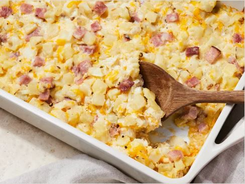

The Worlds Cheesy Ham Potato Bake!

An easy ham, cheese, and potato casserole. I have been told by several people that this could possibly be the best thing they ever tasted. Cheese, ham, and hash browns make this a dish even your pickiest eater will like. A delicious recipe your kids will beg you to make!
- Prep Time:10 Minutes
- Cook Time:1 Hour
- Total Time:1 Hour 10 Minutes
- Servings12
Cheesy Ham Potato Bake Ingredients
- 1 (30 ounce) package frozen hash brown potatoes, thawed
- 1 (12 ounce) package pre-cooked ham steak, diced
- 2 cups shredded sharp Cheddar cheese, or more to taste
- 1 onion, chopped
- 1 (10.5 ounce) can condensed cream of chicken soup
- 1 (8 ounce) container sour cream
- ½ cup butter, melted
- salt and ground black pepper to taste
How to Make Cheesy Ham Potato Bake Ingredients Step-By-Step
- Gather all ingredients.
- Preheat the oven to 350 degrees F (175 degrees C). Grease a 9x13-inch baking dish.
- Stir hash browns, ham, cheese, onion, condensed soup, sour cream, and butter in a large bowl; season with salt and pepper.
- Transfer mixture to the prepared baking dish and cover with aluminum foil.
- Bake until bubbly and cheese is melted, 45 minutes to 1 hour. Remove foil and continue baking until brown, about 15 minutes more.
Quick Tip!
A nice topping for this is some lightly crunched-up Ruffles regular potato chips. They add a nice crunch factor to the casserole. I use them as a garnish when I serve the casserole so they do not get mushy!
World's Best Recipes - Practice webpage - fish-cs2